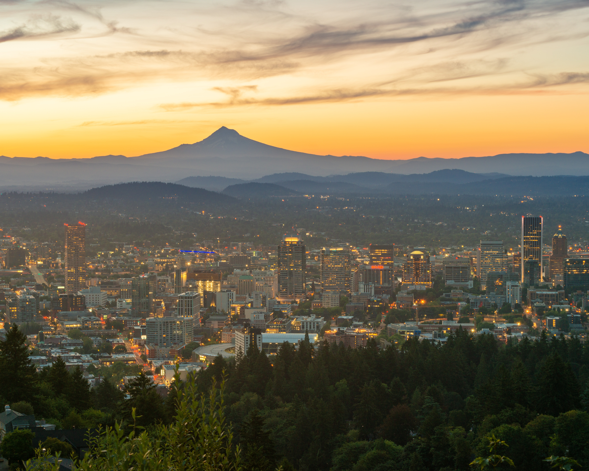

来歴
-
- 2003
- 誕生幼少期はほとんどを寝て過ごしていた
-
- 2010
- 小学校入学小学校一年生からサッカーを始めた
-
- 2013
- 英会話スクールに通い始めるジャスティンビーバーにハマり英会話スクールに通い始める
-
- 2016
- 中学校入学サッカー部に入部、この頃からPCゲームにハマる
-
- 2016
- アメリカ・オレゴン州へホームステイ12歳の時夏休みを使って約一か月間のホームステイに行く
-
- 2019
- 高校入学高校二年生のころからコロナがはやり始める
-
- 2023
- TECH.Cに入学TECH.Cに入学した
アメリカ・オレゴン州
オレゴン州は美しい自然と多様なアクティビティが共存する場所で、
その魅力は数多くあります。まず第一に挙げられるのは、息を呑むほど美しい自然と都市の景観です。
TECH.C
TECH.C.の独自の教育システムは、クリエイター・エンジニアとしての基礎力を1年次から学び、
企業プロジェクトや業界ゼミなどを通じて即戦力としてのスキルを身につけます。
産学連携教育、業界特別ゼミ、トッププロの講義などを通し、技術、知識、成功マインドを結集します。